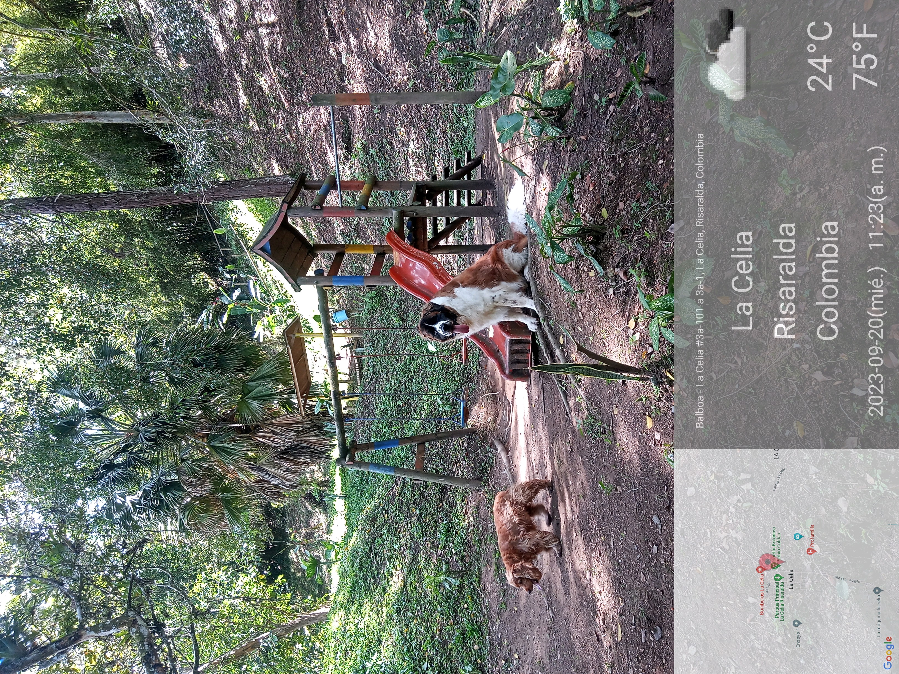
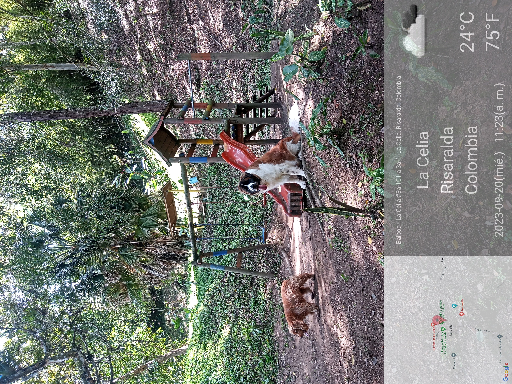

¿Qué es un Jardín Botánico? Normas que reglamentan los Jardines Botánicos
Direccionamiento Estratégico
BGCI Revisión Técnica, Definición de un Jardín Botánico y cómo medir el funcionamiento y la gestión. BGCI, 2017
De la idea a la realización, Manual de la BGCI en planificación, desarrollo y manejo de jardines botánicos. BGCI, 2019
Educación Ambiental en Jardines Botánicos, Lineamientos para el desarrollo de estrategias individuales. BGCI, 2006
Estrategia Nacional para Conservación de Plantas - Actualización y avances. Instituto de Investigación de Recursos Biológicos Alexander von Humboldt, 2010
Manual Técnico Darwin para Jardines Botánicos. BGCI, 2000
Plan de Acción Estrategia Nacional para Conservación de Plantas. Instituto de Investigación de Recursos Biológicos Alexander von Humboldt, 2017Un Jardín Botánico es un espacio físico con colecciones de plantas vivas científicamente organizadas con fines de conservación, investigación y educación. Son por lo general instituciones museísticas de carácter público, privado o mixto, con colecciones de plantas vivas, y en algunos casos herborizadas, sujetas a observación y estudio por su interés científico, económico y sociocultural.
La Asociación Internacional de Jardines Botánicos para la Conservación BGCI (Wyse Jackson, 1999) establece que “un jardín botánico es una institución que mantiene colecciones documentadas de plantas vivas con el propósito de realizar investigación científica, conservación, exhibición y educación”.
El Jardín Botánico Sabio Caldas tiene un área aproximada de 25.600 m2, se localiza a 300 metros de la plaza principal de La Celia, municipio ubicado en la vertiente oriental de la Cordillera Occidental aproximadamente a 67 Km al noroccidente de Pereira, a una altitud y temperatura media de 1380 msnm y 22°C respectivamente.
Fue creado, al igual que otros jardines botánicos de Risaralda, para promover la conservación de la biodiversidad, el agua y el suelo y la educación ambiental, pero con el tiempo ha adquirido vocación de lugar de esparcimiento y recreación, sobre todo para los niños por sus juegos infantiles y cercanía al coliseo y la plaza principal.
Cuenta con una pequeña variedad de plantas de diferentes especies, un sendero por el cual se puede recorrer toda el área y un par de quiscos.

 
